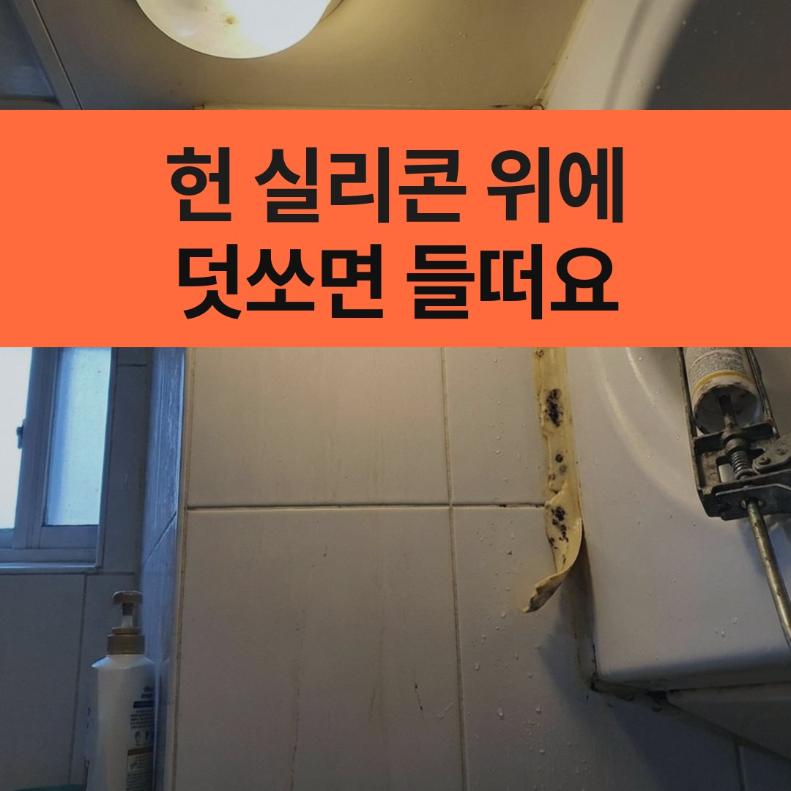
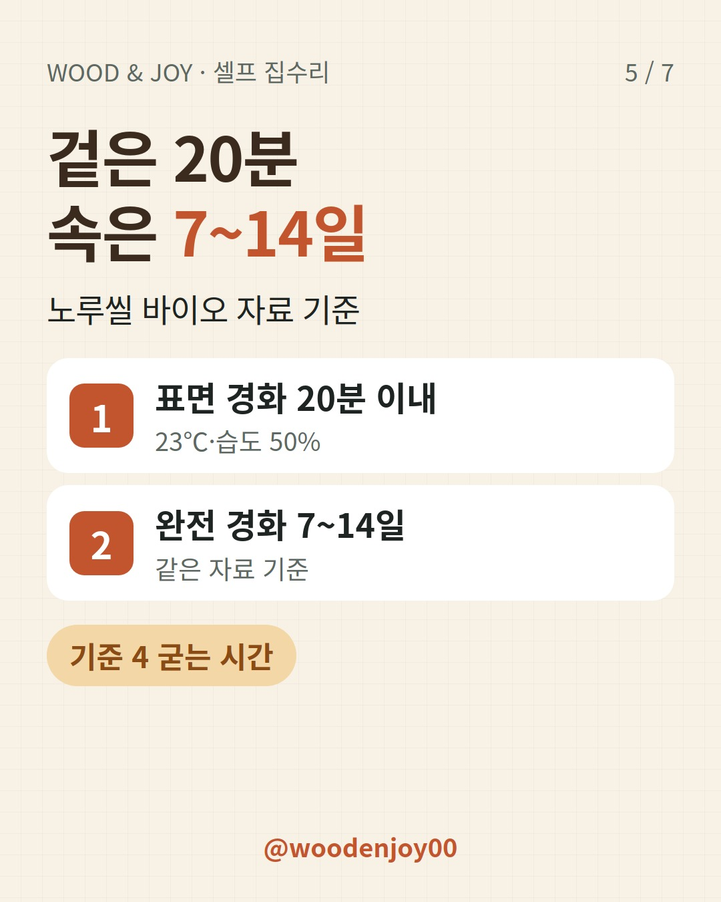

이 포스팅은 쿠팡 파트너스 활동의 일환으로, 이에 따른 일정액의 수수료를 제공받습니다.
욕실 실리콘을 다시 쏘려고 철물점에 갔는데 초산, 비초산, 바이오, 수성이 다 같이 놓여 있으면 뭘 사야 할지 막막하죠?
한 줄 결론: 욕실·주방은 바이오 실리콘, 페인트나 도배를 할 틈은 수성 실리콘이에요. 헌 실리콘을 다 걷어내고 마른 면에 노즐을 45도로 잘라 끊지 말고 한 번에 쏘세요.

집에서 쓰는 실리콘은 4가지만 구분하면 돼요. 포장의 '용도' 칸을 보면 어느 쪽인지 나와요.
| 종류 | 굳는 속도·냄새 | 잘 맞는 곳 | 피할 곳 |
|---|---|---|---|
| 초산 실리콘 | 빠름, 냄새 있음 | 유리·샷시 | 거울·석재·알루미늄·구리(부식 위험) |
| 비초산(무초산) 실리콘 | 느림, 냄새 적음 | 창호, 걸레받이 틈 등 두루 | 위에 페인트·도배할 곳 |
| 바이오 실리콘 | 비초산 + 곰팡이 방지제 | 욕조·세면대·싱크대 둘레 | 위에 칠할 곳, 제품마다 적힌 제외 재질 |
| 수성 실리콘 | - | 도배·페인트 전 크랙, 석고보드·목재 | 물 닿는 곳, 실외 |
바이오도 제품마다 안 붙는 재질이 따로 있어요. 씨카실 바이오는 아크릴 욕조를 제외 재질로 적어 두었어요.
실리콘건(코킹건)은 이 순서로 쓰면 돼요.
노즐은 처음에 작게 자르세요. 작은 구멍은 더 자르면 되지만 크게 잘라 버리면 되돌릴 수 없어요.
겉과 속이 굳는 시간은 꽤 달라요. 제조사 자료 기준이에요.
다 굳기 전에 물이 닿거나 건드리면 잘 안 붙거나 모양이 뭉개질 수 있어요. 겨울 베란다처럼 5℃ 밑으로 내려가는 곳이라면 포장에 적힌 시공 온도부터 확인하세요.

셀프로 할 곳: 욕조·세면대·싱크대 둘레, 창틀 안쪽 틈 / 업체에 맡길 곳: 아랫집으로 물이 새는 누수, 고층 창 바깥쪽(떨어질 위험), 타일까지 들뜬 곳
Q. 무초산하고 비초산은 다른 건가요?
같은 말이에요. 제조사마다 둘 중 하나를 골라 써요.
Q. 바이오 실리콘이면 곰팡이가 안 생기나요?
곰팡이 방지제가 곰팡이를 늦게 생기게 해 주는 정도예요. 환기와 물기 관리는 따로 계속 해야 해요.
Q. 실리콘 위에 페인트를 칠해도 되나요?
초산·비초산(바이오 포함)은 칠이 잘 안 먹어요. 칠할 생각이면 처음부터 수성 실리콘으로 쏘세요.
오늘은 실리콘 사기 전에 쏠 자리 옆에 거울이나 금속이 있는지 먼저 보세요. 집수리 하나 더 보고 싶다면 방문경첩 나사 헛돌 때, 구멍 꽉 채우고 본드 굳히면 안 들어가요도 이어서 읽어 보세요.